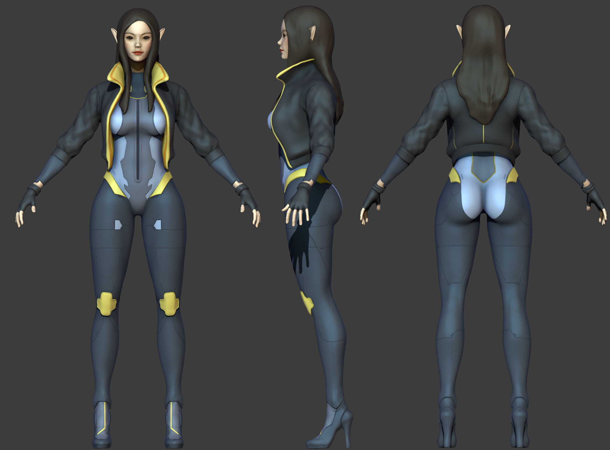
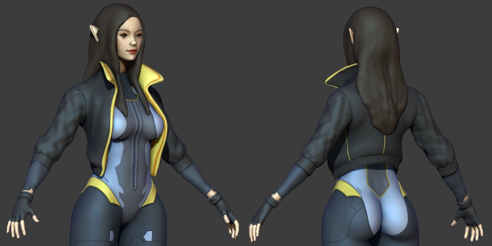
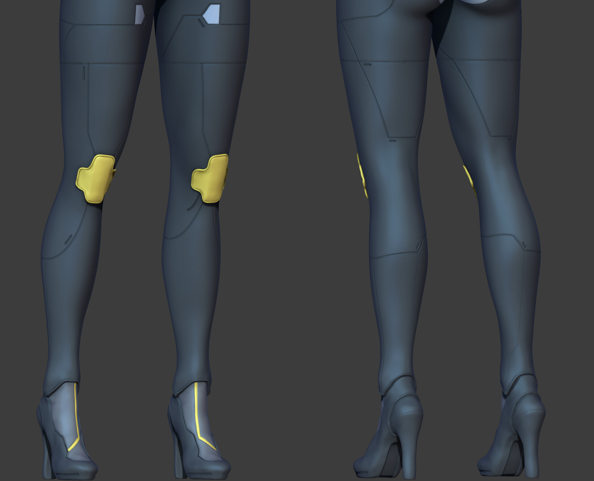
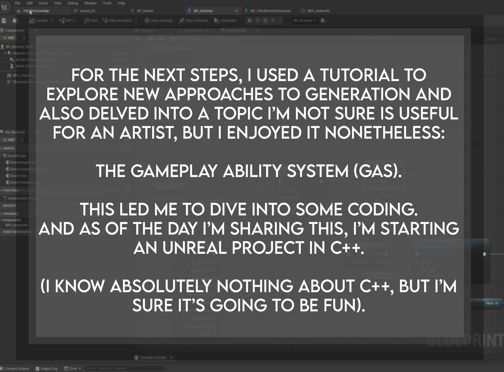

Character
Rosalee · Sculpt WIP
A character sculpt in progress in ZBrush. Click any view to inspect it.



Procedural
Dungeon Generation
Procedural dungeon generation in Unreal Engine: rooms, corridors and connections assembled at runtime.
Gameplay
Gameplay Ability System
Experiments with Unreal's Gameplay Ability System, including a procedural gas effect wired into abilities.
Second experiment + gas render
